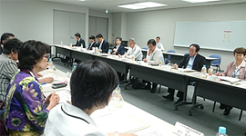

|
|
７月９日(木)13時30分より、さいたま新都心合同庁２号棟にて、農林水産省関東農政局消費・安全部の主催による、第２回関東農政局と埼玉県消費者団体との意見交換会が開催され、関東農政局より12人、消費者団体から12人が出席しました。 前半の時間で、食育をテーマに関東農政局、消費者団体からそれぞれの考え方や取り組みについて報告しました。後半の時間では、(公財)食の安全・安心財団事務局長の中村啓一さんを講師に｢食の安全と異物混入問題｣についての学習と意見交換、次年度からの農林水産省における組織再編について説明がありました。 １．食育に関する報告 ◇食育の理念・食育とは（関東農政局）  ｢食｣の安全と安心の確保に向けた改革の取り組みの中で取入れられた｢食育｣の促進から｢食育推進基本計画｣決定に至るまでの経緯、背景及び栄養バランスに優れた｢日本型食生活｣の実践・推進等、最近の食育に関する位置づけ等について、関東農政局の具体的な取り組みとして、食育推進ネットワークの構築及び食育月間の取り組み、食育活動を行う企業との交流会、各種イベントの開催、管内における食育活動の事例、また大学生等を対象に実施したアンケート調査の報告がありました。 ◇消費者団体の食育の取り組み 県内消費者団体が行っている食育の取り組みの概要、カードゲームを交えながらコープみらいの食育の取り組みについて、パルシステム埼玉が行っている食育サポーターの取り組み、さいたま市消団連の若い世代を対象にした食に関する学習会の取り組みについて報告を行いました。 ２．食の安全と異物混入問題 (公財)食の安全・安心財団 中村啓一事務局長 異物混入の現状、原因、異物混入が発覚した場合の対応、消費者に求めることなどについてお話をいただきました。消費者に求めることとしては｢食品安全のゼロリスクは無いこと｣を勉強して欲しいとお話され、異物混入問題は｢事業者の努力｣｢消費者の理解｣｢メディアの冷静な報道｣が重要であるとしめくくりました。 ３．次年度からの農林水産省における組織再編について(2015年10月より実施) |